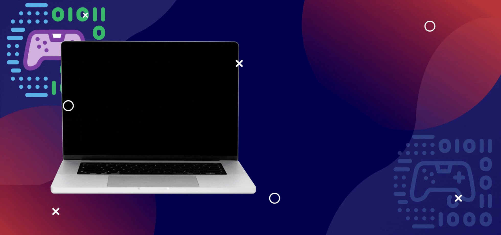

While you focus on your game's logic, BeatCraft composes melodies and full soundtracks that match your game's genre, mood and emotion.
pip install beatcraft
Pick a melody engine, describe your game, and BeatCraft turns it into MIDI and then a full audio track.
The default engine evolves melodies over generations, scoring phrases against the scale for your game's emotion.
A rule-based engine that searches for phrases that fit musical constraints.
A GPT-2 based model that generates melodies in ABC notation, with built-in evaluation and plots.
Turns your melody into a 30-second track with MusicGen, guided by your game's genre and mood.
Install from PyPI, create the SDK and call compose_melody(). You get back a list of notes, each one a (duration, MIDI pitch) pair, saved as a MIDI file you can play right away.

Four steps from an empty script to a finished soundtrack.
If you hit dependency conflicts, install with a constraints file.
# constraints.txt
pandas==2.2.3
numpy>=1.26.0
matplotlib==3.9.2
gradio==4.44.0
torchmetrics==1.4.2
encodec==0.1.1
pip install beatcraft -c constraints.txt
Describe your game with BeatCraftConfig, then compose.
from beat_craft_sdk.core import BeatCraft from beat_craft_sdk.config import BeatCraftConfig, GameGenre, GameMood, GameEmotional config = BeatCraftConfig(file_name='output_bt') config.set_game_genre(GameGenre.ACTION) config.set_game_mood(GameMood.TENSE) config.set_game_emotional(GameEmotional.FEAR) sdk = BeatCraft(config) notes, results, summary = sdk.compose_melody() # [(1, 65), (1, 67), (0.5, 64), (0.25, 67), ...]
The genetic algorithm is the default. Swap it for another engine at any time.
from beat_craft_sdk.crafting_with_backingtrack import CraftingBackingTrack from beat_craft_sdk.crafting_with_transformer import CraftingTransformer sdk.set_melody_engine(CraftingBackingTrack()) # or: sdk.set_melody_engine(CraftingTransformer()) notes, results, summary = sdk.compose_melody()
Play the MIDI, convert it to WAV, and let BeatCraft build the soundtrack around it.
from beat_craft_sdk.utils.audio_converter import AudioConverter sdk.play_generated_music('../.outputx/output_bt.mid') conv = AudioConverter('../.outputx/output_bt.mid', '../.outputx/output_bt.wav') conv.midi_to_wav() sdk.generate_rythm('output_bt') # 30 s track + waveform, spectrogram and pitch plots
Three settings shape the music. The emotion picks the musical scale, while genre and mood steer the soundtrack.
| Value | Scale |
|---|---|
EXCITEMENT | Major |
FEAR | Minor |
PEACEFUL | Pentatonic |
CHALLENGE | Dorian |
| Value | Character |
|---|---|
ACTION | Energetic |
RPG | Epic |
Horror | Dissonant |
Puzzle | Ambient |
| Value | Feel |
|---|---|
JOYFUL | Upbeat and lively |
SERENE | Calm and ambient |
EPIC | Grand and orchestral |
RELAXING | Relaxing |
TENSE | Dark and suspenseful |
Listen to a soundtrack BeatCraft generated for a game with a fearful emotion, action genre and tense mood.